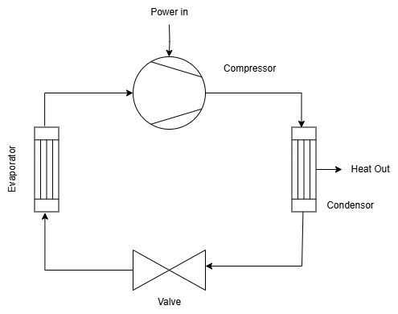

Cycle Modeling
Loading Fluids
Two type of fluid model backends are supported - Clapeyron.jl and CoolProp.jl.
To load a Clapyeron.jl backend fluid model do the following:
using CarnotCycles, Clapeyron
fluid = cPR(["isopentane","isobutane"],idealmodel = ReidIdeal)
load_fluid(fluid)As of now we support Clapeyon mixtures of up to 2 components.
For CoolProp.jl backend fluid properties simply pass the fluid name as a string as follows:
using CarnotCycles, CoolProp
load_fluid("R601")NOTE
Once the fluid model is chosen through the simulation the underlying components are chosen based on the fluid model.
Carnot Cycle
As the name of this package is CarnotCycles.jl, we would first like to model a simple Carnot Cycle using CoolProp.jl even though it is not really physically possible to have one.
His cycle follows a isothermal exapansion of the gas, isentropic expansion, isothermal compression , and finally isentropic compression.
So we will use Clapeyron.jl for our gas model. Here we choose the gas to be Argon.
using CarnotCycles, ModelingToolkit, Clapeyron, SteadyStateDiffEq
fluid = cPR(["Argon"],idealmodel = ReidIdeal)
load_fluid(fluid)
@independent_variables tThe we choose our processes as components and connect them. A source and sink is recommended to initiate and close the cycle.
@named source = MassSource()
@named isothermal_comp = IsothermalCompressor()
@named isentropic_comp = IsentropicCompressor()
@named isothermal_exp = IsothermalExpander()
@named isentropic_exp = IsentropicExpander()
@named sink = MassSink()
eqs = [
connect(source.port,isothermal_exp.inport)
connect(isothermal_exp.outport,isentropic_exp.inport)
connect(isentropic_exp.outport,isothermal_comp.inport)
connect(isothermal_comp.outport,isentropic_comp.inport)
connect(isentropic_comp.outport,sink.port)
]
systems = [source,isothermal_exp,isentropic_exp,isothermal_comp,isentropic_comp,sink]
@named CarnotCycle = ODESystem(eqs, t, systems=systems)
@time sys = structural_simplify(CarnotCycle)Now we state the point at source
πc_1 = 5; πc_2 = 6
source_mdot = 30 #g/s
z_source = CarnotCycles.mass_to_moles(fluid,1,source_mdot)
source_temp = 600; source_pressure = 101325*30;
para = [
source.source_temperature => source_temp, source.source_mdot => source_mdot, source.source_x => 1, source.source_pressure => source_pressure,
isothermal_exp.πc => πc_1,
isentropic_exp.πc => πc_2, isentropic_exp.η => 1,
isothermal_comp.πc => πc_1,
isentropic_comp.πc => πc_2, isentropic_comp.η=>1
]
u0 = []
prob = SteadyStateProblem(sys,u0,para)
sol = solve(prob)To plot the diagram just pass the systems and sol with the adjecent names of the components as a string. Pass the systems and the name string in the same order. The name string should be without source and sink.
system_string = ["isothermal_exp","isentropic_exp","isothermal_comp","isentropic_comp"]
plot(sol,systems,system_string,type = :PH,phase = false)
Vapour Compression Cycle
Now we move to modeling a simple Vapour Compression Cycle.

We first start by loading the adequate packages and the fluid:
using CarnotCycles, CoolProp, ModelingToolkit, SteadyStateDiffEq
@independent_variables t
load_fluid("R134A")Then we define the source thermodynamic state - the starting point of the cycle.
ΔT_sh = 5
p_ = 101325*5; T_ = PropsSI("T","Q",1,"P",p_,"R134A") + ΔT_shThe we choose the adequate components for the vapour compression cycle:
@named source = MassSource()
@named compressor = CarnotCycles.IsentropicCompressor()
@named condensor = CarnotCycles.SimpleCondensor()
@named valve = Valve()
@named evaporator = SimpleEvaporator()
@named sink = MassSink()Then we connect them in necessary order:
systems = [source, compressor,condensor,valve,evaporator,sink]
eqs = [
connect(source.port,compressor.inport)
connect(compressor.outport,condensor.inport)
connect(condensor.outport,valve.inport)
connect(valve.outport,evaporator.inport)
connect(evaporator.outport,sink.port)
]
@named VCC = ODESystem(eqs,t,systems = systems)
sys = structural_simplify(VCC)Then we choose the parameters of the system:
para = [
source.source_pressure => p_, source.source_temperature => T_, source.source_mdot => 0.02,
compressor.πc => 3, compressor.η => 0.7,
condensor.ΔT_sc => 3,
valve.πc => compressor.πc,
evaporator.ΔT_sh => ΔT_sh,
]Then we proceed to solve the problem:
u0 = []
prob = SteadyStateProblem(sys,u0,para)
sol = solve(prob)To get the Coeffecient of Performace of the cycle:
julia> COP = sol[condensor.Qdot]/sol[compressor.P]
-5.096928812859646For plotting the phase diagram
system_string = ["compressor","condensor","valve","evaporator"]
CarnotCycles.plot(sol,systems,system_string,type = :PH,phase = true)NOTE
Energy given to the fluid is +ve while given by the fluid is -ve. Hence the COP is negative

Solution Viewing
There are generally two ways: 1. Printing the output on the terminal using show_all_states(sol,systems,system_string) 2. Plotting the necessary diagram